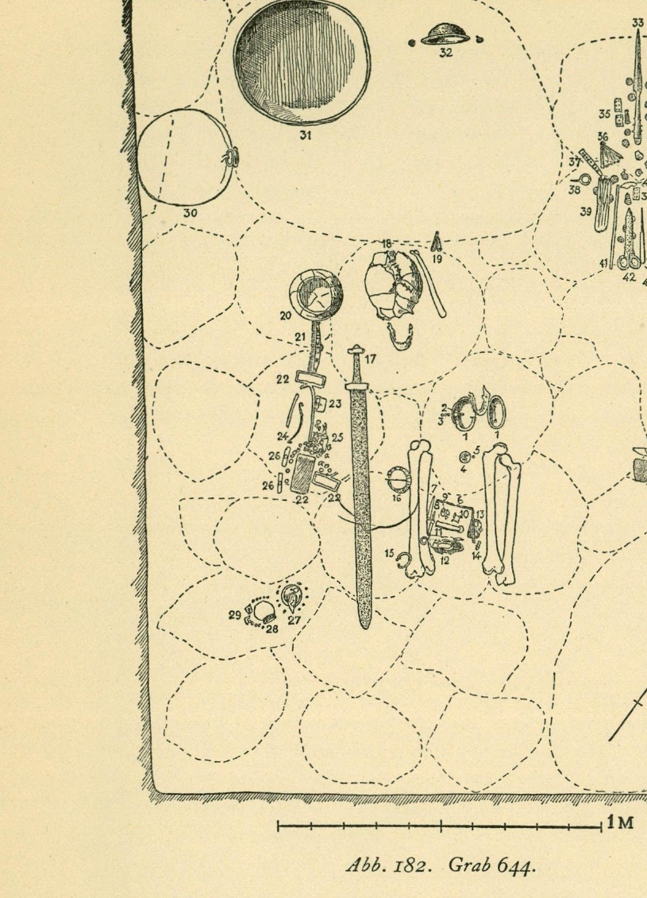

Bj 644 – Doppelkammergrab Birka¶
Informationen
- Grab-ID
- Bj 644
- Fundort
- Birka – Insel Björkö, Mälarsee, Uppland, Schweden
- Gräberfeld
- nördlich der Wallburg (Hemlanden)
- Land
- Schweden
- Grabtyp
- Skelettgrab (Kammergrab)
- Maße
- 2,55 × 1,85 m
- Tiefe
- 1,65–1,80 m
- Kammerwand
- 9 cm dicke Holzschicht an den Wänden bis 1,75 m über dem Boden (Arbman)
- Decke
- Quergehende Hölzer; im Schutt zahlreiche Steine bis 1,2 m Durchm., durch die Decke gesunken (Arbman)
- Orientierung
- W+55°N – O+55°S
- Datierung
- ca. 920–975 n. Chr. (jüngste samanidische Münze aus dem Grab: 308 n. H. = 920/921 n. Chr., Nasr ibn Ahmad — Arbman 1943, S. 221 f.; die zweite samanidische Münze ist mit 296 n. H. älter)
- Bestattete
- Mann, Frau
- Skelett
- ein Schädel, ein Unterkiefer, zwei Paar dicht aneinander liegende Oberschenkelknochen, ein Armknochen
- Lage der Toten
- nach Arbman „schwerverständlich, anscheinend gesessen und zwar möglicherweise die Frau auf den Knien des Mannes"
- Ausgräber
- Hjalmar Stolpe
- Ausgrabungsjahr
- 1878
- Publikation
- Holger Arbman, Birka I: Die Gräber (1943), Grab 644, Abb. 182–183 (S. 221–225)
- Aufbewahrung
- Statens Historiska Museum (SHM), Stockholm – als Teil des Birka-Bestandes (Birka-Sammlung, historiska.se)
Grabinformationen¶
Daten überwiegend aus Arbman 1943 (Bj 644, S. 221–225); ergänzt durch Gustin 2016 und Morén 2022.
Stolpe-Grabungsskizze (1878)¶
Originalskizze aus der Grabungsdokumentation von Hjalmar Stolpe (1878). Sichtbar sind die Ziffer „644", verschiedene Maß- und Tiefenangaben sowie eingezeichnete Lagepositionen einzelner Beigaben.

Bedeutung¶
Bj 644 zählt nach Arbman 1943 und Gustin 2016 zu den artefaktreichsten Gräbern Birkas und wird in der jüngeren Forschung als „lavishly furnished" bezeichnet. Die im Grab enthaltene Klappwaage mit Schalen und Gewichten weist auf Zugehörigkeit zur handeltreibenden Elite hin.
Kulturelle Einflüsse im Inventar¶
Nach Gustin 2016 und Morén 2022:
- Finnische Verbindung: Bj 644 ist eines von vier „lavishly furnished" Kammergräbern Birkas (zusammen mit Bj 834, 845, 954), die als Beleg für ein direkt oder indirekt mit Finnland verbundenes Elitenetzwerk gelten. Das Feuereisen mit Bronzegriff aus Bj 644 ist ein Typ, der aus Finnland und der Perm-Region bekannt ist (Gustin 2016).
- Ungarische Verbindung: Eine ungarische Gürteltasche mit Pflanzenornamentik auf Silberblech (Arbman 182:12) ist Teil des Inventars (Arbman vergleicht mit Fettich, Die Metallkunst der landnehmenden Ungarn, Budapest 1937).
- Arabische Verbindung: Bruchstücke samanidischer und einer abbasidischen Silbermünze als Anhänger (Arbman 182:9).
- Männlich konnotierte Objekte zeigen nach Morén 2022 kosmopolitische Einflüsse aus ungarischer, baltischer und slawischer Kultur; weiblich konnotierte Objekte sind eindeutig nordisch geprägt.
Nach Morén 2022 wird diskutiert, ob der männliche Bestattete nicht aus Birka stammte.
Fundinventar (nach Arbman 1943, Bj 644)¶
Tafel Abb. 183 aus dem Tafelband. Tafelbeschriftung: „Grab 644 ½, Nrs. 17, 20, 22, 27, 30, 33, 47 und 48 ⅓" – diese Nummern im Maßstab 1:3, die übrigen Objekte im Maßstab 1:2.
Die folgenden Listen geben die Beigaben so wieder, wie Arbman 1943 sie beschreibt, mit den dort verwendeten Inventarnummern (Format: 182:NR) und Tafelreferenzen.
Beigaben der Frau¶
- 2 ovale Schalenspangen aus Bronze (182:1, Taf. 66:8), vergoldet, Länge 11,3 cm, mit silberbelegten und niellierten Rändern mit Schnurstabornamentik
- Runde Bronzespange (182:2, Taf. 72:4), vergoldet, Durchm. 7,1 cm, durchbrochene Scheibe mit 4 Vierfüsslern und 4 Tierköpfen am Rand, Eisennadel
- Kleine runde Bronzespange (182:4, Taf. 71:11), vergoldet, Durchm. 2,7 cm, geometrische Verzierung mit 3 naturalistischen Tierköpfen
- „Schwefelkieskristalle(?)" (182:5) – im Museum nicht mehr vorhanden
- Goldband (182:6) – siehe Birka III, S. 164
- Stickerei aus Silberdraht und Goldblech (182:10) – siehe Birka III, Taf. 34:5
- Arabische Silbermünzen (182:9) – eine halbe und 3 kleinere Stücke; zwei samanidisch (308 n. H. = 920/921 n. Chr. für Nasr ibn Ahmad; 296 n. H.), eine abbasidisch (al-Mudammadijah, 19x oder 190 n. H.); ein viertes Fragment unbestimmbar
- Pfriemen aus Geweihspitze (182:7), Länge 8,4 cm, Drechselspuren
- Wetzstein (182:11), Länge 8,5 cm, aus braunrotem und grauem Bandschiefer mit Silberring
- Eisenmesser mit bronzebeschlagener Lederscheide (182:12 als Messer markiert, deutlich identisch mit dem oberen Teil eines Hiebmessers 182:47)
- Lederbeutel mit Silberblechbeschlägen (182:12 für die Bleche) – nach Arbman eine „ungarische Gürteltasche" mit Pflanzenornamentik, in zwei Teilen, Bleche an Leinen befestigt, darunter Leder
- Feuereisen mit Bronzegriff (182:13, Taf. 144:2), 6 × 4,8 cm, Dicke 0,7 cm, gebildet aus zwei gegen einander gestellten Tierköpfen an langen Hälsen – nach Gustin 2016 ein Typ, der aus Finnland und der Perm-Region bekannt ist
- Unverzierter Hornkamm (182:14), nur ein Fragment erhalten
Beigaben des Mannes¶
- Ringspange aus Bronze (182:16, Taf. 48:4), vergoldet, Durchm. 7,5 × 6,5 cm, tierkopfförmige Enden, quergehende Bänder mit Schnurstabornament für Niello
- Ringspange aus Bronze (182:15, Typus Taf. 54:6), Durchm. 5,6 × 5,2 cm, etwas deformiert, Gittermuster
- Eisenschwert (182:17), beschädigt, Knauf fehlt, wahrscheinlich Typus Taf. 2:2; Länge 69,5 cm, Breite der Parierstange 9,8 cm; ursprünglich mit eingeschmiedeten Silber- und Kupferstreifen
- Speerspitze (182:33, Taf. 7:7), Länge 33,8 cm, Blatt 2,1 cm breit, Tülle mit 5 durchgehenden Messingnieten, Verzierung aus 9 eingehämmerten Kupfer/Silber-gezwirnten Fäden
- Etwa 15 Pfeilspitzen (182:39), dreiseitiger Querschnitt, einige kurz (Typus Taf. 12:8), die meisten ca. 8–9 cm lang
- Schildbuckel aus Eisen (182:32, Taf. 17:2), Durchm. 15,5 cm, Höhe ca. 6 cm, mit 2 kleinen Eisenringen (Durchm. 1,9–2,4 cm) zum Festmachen des Schildriemens
- Eisenbeil (182:48, Taf. 14:10) mit hammerförmigem Nacken, vor und hinter dem Stielloch quergehende Wülste, Länge 20,3 cm
- Hiebmesser (182:47) – siehe oben, zusammen mit dem Messer der Frau gefunden
- 2 beschädigte Steigbügel aus Eisen (182:22, Taf. 35:3-4), Länge 22,8 cm, Breite 10,1 cm, Außenseite mit eingehämmerten Metallstreifen (abwechselnd 3 Kupfer / 3 Messing)
- 2 Riemenbeschläge aus Eisen (182:25) – Krampen mit Holzspuren (Sattel?), Vorderseite mit Weißmetall belegt, 5,7 × 3,6 cm
- 2 Eisenschnallen (182:23, Taf. 29:4), Oberfläche mit Weißmetall belegt, Riemenbreite 5,1 und 5,4 cm
- 3 Fragmente eines Eisenhenkels (182:24), Endpartien gedreht, Mittelpartie flach, Enden aufgerollt
- Hornkamm mit Griff am Rücken (182:21, Taf. 162:2), Linienverzierung, derbe Zähne (Pferdekamm?), Länge 15 cm
Westlich der Schwertspitze (Beigabengruppe)¶
- Eichenholzschachtel (182:27, Taf. 278:1) mit dünnen, beschädigten Bronzepressblechen (verworrene Tierornamentik); enthielt eine Bronzeschelle (nicht mehr vorhanden) und ein Löffelblatt aus Eisen (Taf. 151:4, 7,7 × 4,1 cm, Spuren von Vergoldung)
- Holzbüchse für eine Waage (Deckel mit Eisenniet, vielleicht drehbar)
- Klappwaage aus Bronze (Taf. 126:1a) mit Waagschalen Durchm. ca. 6 cm, eingravierte Verzierung, Stofffäden-Befestigung
- 2 Bronzekugeln (Gewichte?), eine rund mit kleiner Vertiefung (Durchm. 1,7 cm), eine bikonisch mit konkaven Flächen (Durchm. 1,2 cm)
- Bronzeblechbekleidetes Eisengewicht (Durchm. 1,5 cm)
- Fragment einer Bronzeschale(?) (Taf. 279:14) – Bronze mit „anglosächsischem" Ursprung (laut Arbman)
Klappwaage Bj 644 = Taf. 126:1a (Tafelband S. 144) — Rekonstruktionszeichnung: klappbarer Waagebalken, die beiden Schalen mit Flechtband am Rand und eingraviertem Sternmuster im Boden (mittig die Aufsicht einer Schale). Auf derselben Tafel zeigt 1b den Originalbefund, 2–4 die Gewichte aus Bj 644; das Randfragment einer Waagschale unter Nr. 6 stammt aus Bj369_Birka:
Glasperlen und Glasobjekte¶
- 8 Glasperlen rings um die Eichenholzschachtel: 3 Doppelperlen (2 mit Silber-, 1 mit Goldfolie), die übrigen einfach (1 mit Goldfolie, 3 mit Silberfolie, 1 gelb), Durchm. 0,3–0,8 cm
- Kleiner Glasbecher (182:28, Taf. 189:4), Höhe 6,1 cm, Durchm. 6,4 cm, gut entfärbte Masse mit dunkel purpurviolett aufgeschmolzenem Mündungsrand, Wandstärke 0,05 cm
- 2 Fragmente eines Glasspiegels (182:29, Taf. 195:6), 3,6 × 3,3 cm, Dicke kaum 0,05 cm, unregelmäßig achtseitig, mit Bleifolie an der Unterseite
- 27 weitere Glasperlen (rings um den Glasbecher; museumstechnisch mit 182:3 vermischt): 13 mit Goldfolie (Taf. 117:11 unten), 5 Doppelperlen, 3 blassgolden, 8 mit Silberfolie (Taf. 117:11 oben), 3 gelbe, 3 blaue – Durchm. 0,5–0,9 cm
Perlen-Gesamtzahl Bj 644: 8 + 27 = 35 – bestätigt durch Morén 2025.
W-Ecke der Kammer (vermutlich in einem Kästchen)¶
- 22 Spielsteine (182:34, Taf. 148:2) – zwei „Könige" + 20 halbsphärisch; hell seegrüne Glasmasse mit spiralförmig eingeschmolzenen purpurvioletten Fäden; Könige 4 bzw. 4,6 cm hoch, Durchm. 2,3 cm, übrige 2,3–2,4 cm hoch (einer der Könige aus dunklerer Masse mit craquelierten Fäden)
- 3 Spielwürfel (182:35) aus Rosenstock von Hirschgeweih
Verknüpfte Funde¶
| Fund | Arbman-Nr. | Eintrag |
|---|---|---|
| Feuereisen mit Bronzegriff | 182:13 | Feuereisen_Bj644_Birka |
| Klappwaage aus Bronze | – (nur Tafel 126:1a) | Klappwaage_Bj644_Birka |
| 3 Spielwürfel aus Hirschgeweih-Rosenstock | 182:35 | Wuerfel_Bj644_Birka; als Vergleichsfund auch in Knochenwuerfel (Ausstellung) |
Weitere Einzelfunde aus Bj 644 können bei Bedarf als eigene Fundbelegeinträge unter Wissen/Kulturgueter/ angelegt und hier verlinkt werden.
Quellennachweise¶
- Arbman_1943_Birka_Graeber – Holger Arbman, Birka I: Die Gräber (1943); primäre Quelle für das gesamte oben aufgeführte Inventar (Grab 644, S. 221–225, Tafel Abb. 183). Volltext liegt im Archiv.
- Stolpe_1878_Birka_Grabung – Hjalmar Stolpes Originalskizze von 1878 (Datierung auf der Skizze sichtbar)
- Gustin_2016_Birka_Finnland – Ingrid Gustin, The Finnish Connection in Birka (in Holmquist/Kalmring/Hedenstierna-Jonson 2016, S. 49–61); diskutiert Bj 644 als Elite-Kammergrab mit finnischer Provenienz des Feuereisens. Volltext liegt im Archiv.
- Morén 2022 – Doppelgrab-Beitrag – Reenactor-Einführungsbeitrag (DE + EN) mit Reproduktion der Stolpe- und Arbman-Zeichnungen
- Morén 2025 – Viking Age Beads – nennt 27 + 8 Perlen für Bj 644 (bestätigt durch Arbman)
- Morén 2022 – Visby Shopping Haul – Bezugsquelle für Perlenrepliken (Sylvia / Viking Beads)
- Vlasaty_2021_Schildbuckel – Vlasatý 2021: führt für Bj 644 Schildbuckel Typ Rygh R563, Ø 15,5 cm an (übereinstimmend mit Arbman 182:32)
- Price_2019_Bj581_Warrior_Women – Price, Hedenstierna-Jonson et al., Viking warrior women? Reassessing Birka chamber grave Bj.581 (behandelt ein anderes Birka-Kammergrab)
- The Viking Apprentice – Birka Gaming Pieces – Beschreibung des Spielsets aus Bj 644 (Detailinformationen, ergänzend zu Arbman)
- Foto der Spielsteine aus Bj 644 (Ola Myrin, SHM) via ResearchGate
- Historiska_Birka – Museumsportal, Birka-Sammlung; einzelne Inventarnummern für Bj 644-Funde im Archiv noch nicht erfasst
Relevanz für das Reenactment¶
- Konkrete Grundlage für eine quellentreue Darstellung eines Elite-Doppelgrabs der späten Wikingerzeit (Bj 644 wurde frühestens 920/921 n. Chr. angelegt — die jüngste samanidische Münze aus dem Grab liefert einen terminus post quem; Belegungszeitraum nach Morén 920–975)
- Beleg für die internationale Vernetzung der Birka-Elite: skandinavisch + finnisch (Feuereisen, Tracht) + ungarisch (Gürteltasche) + arabisch/abbasidisch/samanidisch (Münzen) + angelsächsisch (Bronzeschale-Fragment) + slawisch
- Trachtenrekonstruktion der Frau anhand vollständigen Inventars möglich:
- 2 vergoldete ovale Schalenspangen + Behang aus 27 Perlen + Halskette aus 8 Perlen
- Runde Bronzespange + kleine Bronzespange als Brustschmuck
- Gürtel mit ungarischer Tasche, Feuereisen, Eisenmesser
- Replik des Feuereisens ist Teil unserer Ausstellung: Feuereisen (Bj 644)
Offene Aufgaben / nachzutragen¶
- Einzelne Inventarnummern der Bj 644-Funde aus der Online-Sammlung des Statens Historiska Museum recherchieren
- Geijer 1938 Birka III: Die Textilfunde konsultieren für die im Arbman-Text mit „Birka III, S. 120, 164" referenzierten Stickereien und Goldbänder
- Fettich 1937 Die Metallkunst der landnehmenden Ungarn (Arbman zitiert Abb. 184) als Vergleichsmaterial für die ungarische Gürteltasche